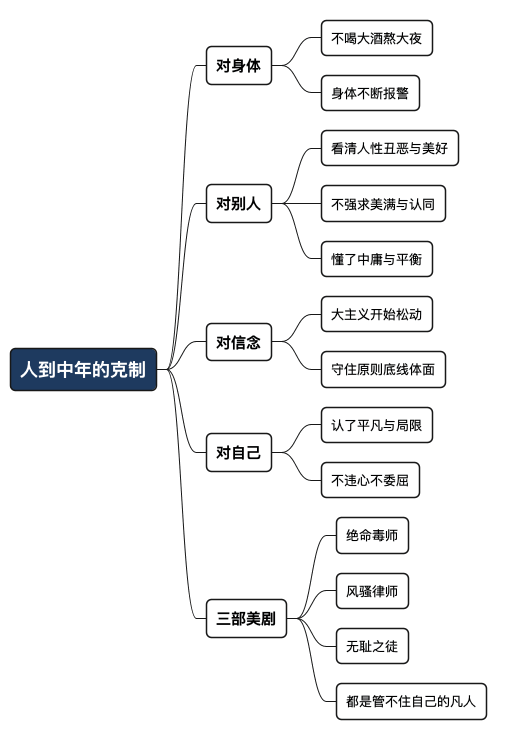

人到中年，最可贵的领悟是克制
Posted on 二 20 10月 2026 in Journal
| Abstract | 人到中年，最可贵的领悟是克制 |
|---|---|
| Authors | Walter Fan |
| Category | Journal |
| Version | v1.0 |
| Updated | 2026-10-20 |
| License | CC-BY-NC-ND 4.0 |
人到中年，最可贵的领悟是克制
大纲
展开看看
- 身体先替你喊停：喝大酒、熬大夜、暴饮暴食，年轻时无感，中年时身体直接给你报警
- 不再强求：看清了人性的丑恶与美好，不再强求美满、强求别人的认同，开始信中庸
- 守住底线就好：越来越分不清黑白，很多年轻时深信不疑的主义开始松动，剩下的是原则、底线和基本的体面
- 认自己的平凡：理想与现实之间那条鸿沟，中年人认了，在自己一亩三分地里不违心、不委屈就够了
- 三部美剧的共同主题：绝命毒师、风骚律师、无耻之徒，讲的都是管不住自己的凡人
- 克制不是认输：它是看清边界之后的主动选择
年轻的时候，我一直把“克制”当成一个有点窝囊的词。
能喝就多喝两杯，能熬就熬个通宵，爱憎分明，有话直说，看谁不顺眼就怼谁——那才叫活得痛快。至于克制，那是没本事、没底气、怕这怕那的人才讲的。
人到中年，我才慢慢改了看法。克制不是认输，是你终于看清了边界之后，做出的选择。这篇不讲什么大道理，就是一个奔五的老程序员，跟自己这些年的欲望较劲之后，攒下的一点私房感悟——如果你也正跟自己较着劲，也许能对上几句。
身体是第一个替你喊停的人
中年最先教会你克制的，不是书，不是领导，是你自己的身体。
年轻时喝大酒，第二天睡一觉就满血复活；现在喝多了，难受两三天，心跳快得像要从嗓子眼跳出来。年轻时熬大夜写代码，通宵之后还能接着开会；现在熬一夜，接下来一整周脑子都是糊的。年轻时暴饮暴食从不还债，现在体检报告上那一行行超标的箭头，就是账单。
身体不跟你讲道理，它只给你报警。血压、血脂、尿酸、心率——每一个指标都是一盏告警灯。年轻时你可以把告警静音，照旧浪；中年时你会发现，静音久了，它就不再是告警，而是直接宕机。
所以中年人的克制，很多时候是被身体逼出来的：不是我多自律，是我真的不敢了。这话说出来一点都不豪迈，但它真实。能把“不敢”过成一种习惯，倒也是一种长进。
不再强求，是放过别人，也放过自己
身体之外，第二件事是人。
年轻时我以为，只要我足够真诚、足够努力，总能换来一段圆满的关系、一句公道的认可。后来见过了足够多的人和事，才慢慢看清：人性里丑恶和美好是搅在一起的，同一个人，可以今天帮你，明天坑你，并不矛盾。
看清这一点，不是让你变得冷漠，而是让你不再强求：
- 不再强求一段关系必须圆满——有些关系，做到体面退场就已经是好结局。
- 不再强求别人必须认同你——你把事做好，认不认同是他的事，不是你的 KPI。
- 不再强求一个非黑即白的答案——很多事就是灰的，中间地带才是生活的常态。
年轻时听到“中庸之道”“平衡之道”，总觉得是和稀泥、没原则。人到中年才咂摸出味道来：中庸不是没有立场，是知道什么时候该用力、什么时候该松手。该较真的地方寸步不让，不值得的地方一笑了之——这个分寸感，年轻时真的没有。
越来越分不清黑白，就越要守住底线
有件事挺让我意外的：年纪越大，我反而越分不清黑白了。
年轻时脑子里装着一堆斩钉截铁的信念和主义，觉得对就是对，错就是错。可见得越多，那些曾经深信不疑的东西，一条一条开始松动。不是我变坏了，是我发现世界比当年那套简单的对错框架复杂得多。
但分不清黑白，不等于什么都无所谓。恰恰相反——正因为大的那套信念松动了，能攥在手里的，就剩下几条最基本的东西：
不骗人，不害人，不占便宜，做事对得起自己的良心。 大主义可以怀疑，这几条底线不能破。
说白了，中年人守的不再是某个宏大的“主义”，而是原则、底线，和基本的体面。这几样东西不需要向谁证明，也不指望谁表扬，就是你一个人在深夜扪心自问时，不至于看不起自己的那条线。
认了自己的平凡，也就轻松了
年轻时最不甘心的，是“平凡”两个字。
总觉得自己该干点大事，该改变点什么，理想高高挂在那儿。可干了半辈子，理想和现实之间那条鸿沟，我是真真切切地看清楚了——我就是个普通人，有我的局限，有我够不着的天花板。
这个认命的过程，一开始挺丧的，后来反而轻松了。我现在的追求很小：在自己这一亩三分地里，把该做的事做好就不错了；在自己的小世界里，不违心、不委屈，就不错了。
不违心，是不做自己看不起的事；不委屈，是不长期忍自己受不了的人和环境。能守住这两条，一个中年人的日子就已经过得不算失败了。至于那些没实现的宏图大志，就让它们挂在那儿当个念想吧，挂着也挺好。
三部美剧，讲的都是管不住自己的人
说点轻松的。我很爱看美剧，心里的 top 3 是《绝命毒师》《风骚律师》和《无耻之徒》。
有意思的是，这三部我最喜欢的剧，主角全都是克制不了自己欲望的凡人。
老白从一个窝囊的高中化学老师，一步步变成大毒枭，每一步都有“再往前一点就收手”的机会，可他一次都没停下来——他戒不掉的不是毒，是那种“我终于被人看得起”的快感。吉米从一个想做好人的小律师，滑向 Saul Goodman，也是一样，每一次走捷径都告诉自己“就这一次”。《无耻之徒》里那一大家子，更是把“管不住自己”演绎到了极致：酒、钱、情绪、面子，没有一样刹得住。
这些剧之所以好看，不是因为他们干了惊天动地的大事，而是因为他们身上有我们每个人的影子：被欲望一点点挟持，管不住自己，然后不断伤害自己和身边最亲的人。
看着看着我就明白了：悲剧往往不是一次大的堕落，而是无数次“就这一次”的累积。而所谓克制，就是在那无数个“就这一次”的路口，偶尔能对自己说一次“不”。
总结：克制不是认输，是看清边界后的选择
人到中年这些年，我对克制的理解，大概可以收成一句话：
年轻时以为克制是软弱，中年才明白克制是看清边界之后的主动选择。
对身体，克制是认它的极限；对别人，克制是不再强求；对信念，克制是守住底线而不扮演真理；对自己，克制是认了平凡，却仍不违心。
我当然没修炼到家。到现在，还是会有管不住自己的时候——该睡的时候刷手机刷到后半夜，该少吃的时候又多夹了两筷子。可比起年轻那会儿，那些“管不住”的时刻，确实是越来越少了。
这就够了。中年人的克制，不是要你变成一个无欲无求的圣人，而是让那个“就这一次”的路口，你能多停住几次。
你最近一次对自己说“不”，是什么时候？
全文思维导图
@startmindmap
<style>
mindmapDiagram {
node {
BackgroundColor #F8F9FA
RoundCorner 10
Padding 10
FontSize 13
}
:depth(0) {
BackgroundColor #1E3A5F
FontColor white
FontSize 18
FontStyle bold
}
:depth(1) {
FontSize 15
FontStyle bold
}
:depth(2) {
FontSize 13
}
}
</style>
* 人到中年的克制
** 对身体
*** 不喝大酒熬大夜
*** 身体不断报警
** 对别人
*** 看清人性丑恶与美好
*** 不强求美满与认同
*** 懂了中庸与平衡
** 对信念
*** 大主义开始松动
*** 守住原则底线体面
** 对自己
*** 认了平凡与局限
*** 不违心不委屈
** 三部美剧
*** 绝命毒师
*** 风骚律师
*** 无耻之徒
*** 都是管不住自己的凡人
@endmindmap

本作品采用知识共享署名-非商业性使用-禁止演绎 4.0 国际许可协议进行许可。 欢迎在我的个人网站 https://www.fanyamin.com 访问原文并评论。